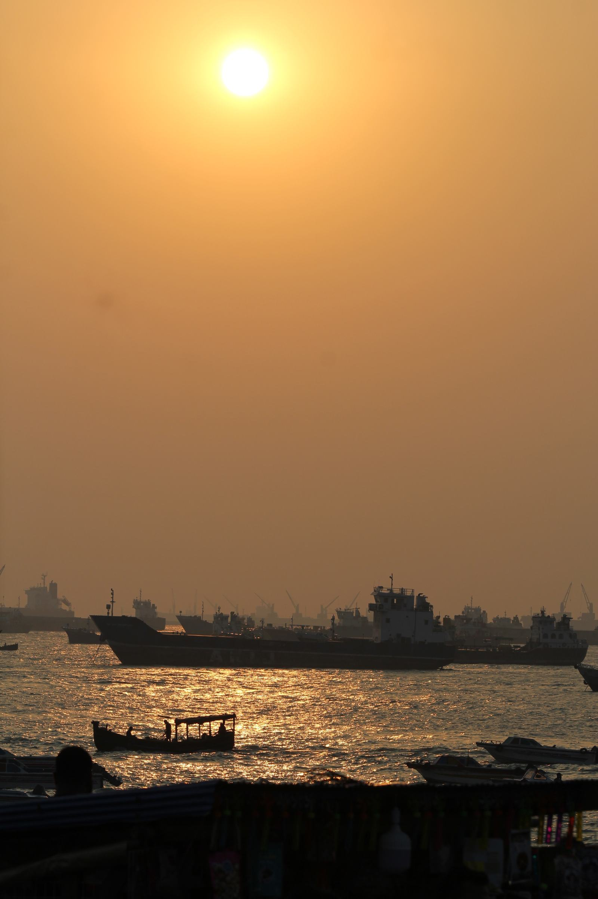

24 Sept 2026
The bank at Ashuganj doesn’t look right.
A note about waste, drains, and how the riverside has changed. This culvert is from about that time. Concrete almost gone under the green. The water isn't right.
Photographs from walks along the river, the harbor, and the streets. Ships, leaves, moons, and whatever caught the eye. Student work, kept because they still feel alive.
SCROLL TO EXPLORE
Most of these were shot from the edge. A Maersk you can hardly see, rocks in front, kites over a bridge. No plan. Just the camera.
Small moments, collected along the way.
No frames match this search. Try another word.
Not an expert. Learning, building, and recording the places I move through.
Pictures are fun to make. I also create small websites, experiment with IoT using an ESP8266, and enjoy robotics. This particular picture is part of the IRO Bangladesh Open 2026. The camera records bridges, leaves, drains almost covered by ivy, and the river of Ashuganj.
A note about waste, drains, and how the riverside has changed. This culvert is from about that time. Concrete almost gone under the green. The water isn't right.
Photographs, projects, or just a walk along the river — I’m open to conversations.